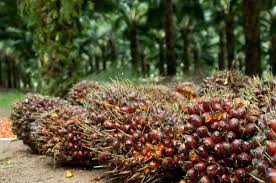
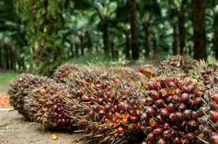

Selamat Datang di Sistem Pakar Kelapa Sawit
Sistem ini membantu Anda mendiagnosis penyakit dan hama pada tanaman kelapa sawit serta memberikan solusi penanganannya.
 Mulai DiagnosisSistem ini membantu Anda mendiagnosis penyakit dan hama pada tanaman kelapa sawit serta memberikan solusi penanganannya.
 Mulai Diagnosis